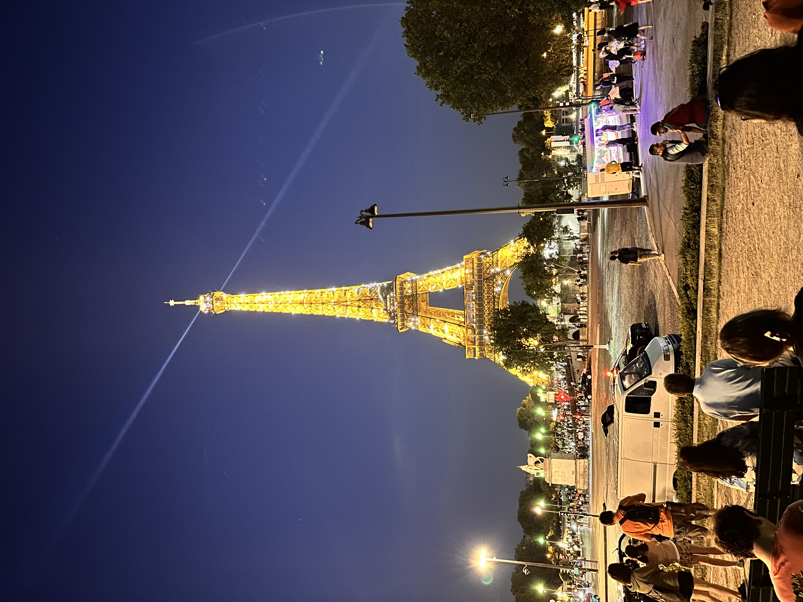
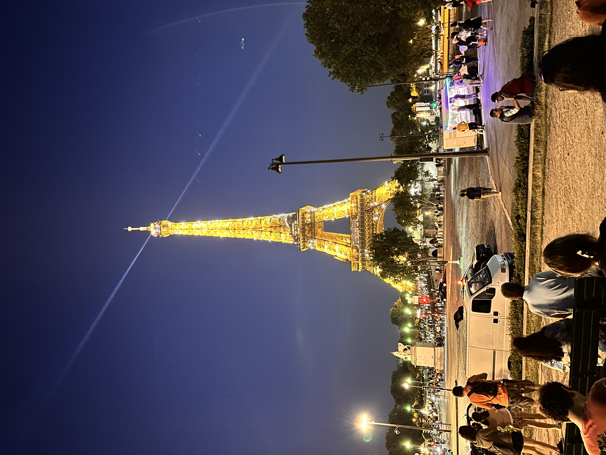

.png)


Our cultural odyssey begins in Paris, the City of Lights, where iconic landmarks like the Louvre
Museum and the Eiffel Tower stand as testaments to centuries of artistic and architectural brilliance.
Dive into the Louvre's vast collection, home to the enigmatic Mona Lisa and the regal Venus de Milo.
Wander through the historic streets of Montmartre, where bohemian spirits once thrived, and discover
the studios that housed artists like Picasso and Van Gogh. France's artistry extends beyond canvas to
its cathedrals, each a living testament to Gothic architecture, as witnessed in the awe-inspiring
Notre-Dame Cathedral in the Île de la Cité.
No exploration of French culture is complete without indulging in its world-renowned culinary treasures.
Traverse the open-air markets of Provence, inhaling the aroma of freshly baked baguettes and locally sourced
lavender. Join us at a quintessential Parisian bistro, where escargot and coq au vin grace the menu, offering
a delectable glimpse into French gastronomy. Journey to Bordeaux's vineyards, where the art of winemaking is as
intrinsic to the culture as the romance of the French language.
Paris has been maintaining its publicity well, with the amazing food, culture and beautiful views where ever you go. The crowd in Paris is always at its most, but it is still as breathtaking as it can be. Even though the recommended days for visiting Paris is 3 days for a tourist, I was there for 8 whole days! And all of them were as magical. Disneyland Paris We spent 4 mystical days in Disneyland. The music, the characters dancing about, and the experience of the lovely atmosphere in Disneyland was very memorable. Rides in Disneyland Paris were also very themed and adventurous. There were interests for all ages in there, from parachute rides to haunted houses.
Day 1: Welcome to the Magic Kingdom
Embark on your enchanting journey with a warm welcome from Mickey and friends at Disneyland Paris.
Spend the morning exploring the classic charm of Fantasyland, with iconic attractions like Peter Pan's
Flight and the charming Le Carrousel de Lancelot. After a delightful lunch at Plaza Gardens, venture
into Adventureland for thrilling experiences like Indiana Jones and the Temple of Peril. Cap off your
evening with a spectacular viewing of Disney Illuminations over Sleeping Beauty's Castle.
Day 2: A Deep Dive into Discoveryland
Day two takes you on a futuristic adventure in Discoveryland. Blast off into space with Hyperspace Mountain,
and then explore the mysteries of the Nautilus in Les Mystères du Nautilus. Grab a quick bite at Buzz
Lightyear's Pizza Planet, followed by an afternoon exploring the quirky world of Alice in Wonderland in
Fantasyland. As evening falls, don't miss the dazzling Disney Stars on Parade and the nightly illumination show.
Day 3: Whimsical Day in Walt Disney Studios Park
Step into the glitz and glamour of Hollywood at Walt Disney Studios Park. Spend your morning meeting beloved
characters and experiencing the movie magic of Ratatouille: The Adventure and Crush's Coaster. Enjoy lunch
at Bistrot Chez Rémy before exploring Toon Studio and the captivating world of Toy Story Playland. Cap the
day with a thrilling performance of Moteurs... Action! Stunt Show Spectacular.
Day 4: Magical Moments and Farewell
On your final day, return to Disneyland Park for a magical morning in Adventureland, exploring the treasures
of Pirates of the Caribbean and the enchanting world of Aladdin. Enjoy a leisurely lunch at the Blue Lagoon
Restaurant, then make your way to Frontierland for a ride on Big Thunder Mountain. End your trip on a sweet
note with treats from Main Street Confectionery and a final stroll down Main Street, capturing the essence of
your four days in the magical kingdom. As you bid farewell to Disneyland Paris, carry with you a heart full
of cherished memories and the promise of a return to this whimsical wonderland

 


As a child, i always wanted to visit France. It was in the year 2023 when i got to visit there for the first time.
What an experience i must say. I had seen the Eiffel Tower in the movies and had always imagined how it would be like
in real. I was in total awe when I saw it. It is grand, huge, larger than life, mesmerizing. I completely understand why
this lady married the eiffel toewer.
Standing proudly on the banks of the Seine River, the Eiffel Tower is not just a landmark; it's a symbol of romance,
elegance, and the eternal spirit of Paris. Join us on a journey as we unravel the magic of this wrought-iron
masterpiece, exploring its history, design, and the unparalleled views that have captivated millions of visitors
from around the globe.
As you approach the Champ de Mars, the Eiffel Tower's intricate lattice structure rises majestically against the
Parisian sky. Unveiled in 1889 as the entrance arch to the World's Fair, Gustave Eiffel's creation was met with both
awe and skepticism. Today, it stands as a testament to architectural genius, with its intricate ironwork and 18,038
individual pieces crafting an icon that has become synonymous with the City of Light.
Begin your ascent to the summit, either by a leisurely stroll up the grand staircase or a swift elevator ride, both
offering breathtaking views of the city. As you rise above the rooftops, Paris unfurls beneath you in all its glory.
Spot the Louvre, Notre-Dame Cathedral, and the Arc de Triomphe, each telling a story of Paris's rich history. At the
summit, a panoramic vista awaits, inviting you to savor the skyline during the day or bask in the sparkling city
lights after sunset.
Capturing Timeless Moments:
The Eiffel Tower is not just a spectacle to behold; it's a canvas for creating timeless memories. Whether it's a
romantic picnic in the Champ de Mars, a whimsical carousel ride, or a serene Seine River cruise at its base, the
Eiffel Tower serves as the backdrop to countless stories of love and exploration.
It was one of my dream destinations. I was feeling significantly haapy while around the eiffel tower. no wonder it
is one of the seven wonders of the world.
France, renowned as the gastronomic epicenter of the world, boasts a culinary tradition that is both rich in history and diverse in its offerings. French cuisine is a symphony of flavors, an art form that captivates the senses with its exquisite taste and meticulous presentation. From the aromatic lavender fields of Provence to the bustling markets of Paris, every region contributes distinct ingredients and techniques, creating a tapestry of culinary delights. French cuisine is celebrated for its emphasis on fresh, high-quality ingredients and the meticulous preparation of dishes. Classics like coq au vin, ratatouille, and bouillabaisse showcase the marriage of flavors and the mastery of techniques, while patisseries tempt with delicate pastries like croissants, éclairs, and macarons. The French take pride in their local produce, cheeses, and wines, cultivating a deep connection between the land and the table. Exploring the food of France is not just a gustatory experience but a cultural immersion, a journey through time-honored recipes that have shaped the global culinary landscape.
Conclusion:
My Travel Diary invites you to savor the nuances of French culture, where each cobblestone, stroke of paint,
and delicate sip of wine tells a story. As we traverse this cultural mosaic, we'll unravel the secrets that
make France an enduring symbol of sophistication and joie de vivre. Pack your bags, embrace the spirit of
"l'art de vivre," and let the journey unfold. À bientôt!